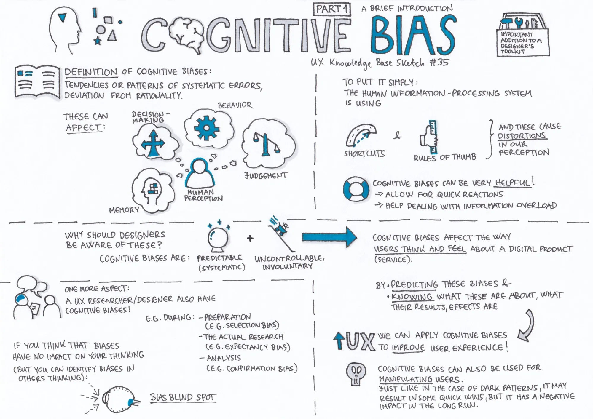

- 01. Bias: Authority BiasAuthority bias, also known as the authority effect or deference to authority, refers to a cognitive bias in which individuals attribute greater accuracy, credibility, or…
- 01. Bias: Optimism BiasOptimism bias is a cognitive bias characterized by individuals' tendency to overestimate the likelihood of positive outcomes and underestimate the likelihood of negative…
- 02. Bias: Availability BiasIn psychology, the availability bias is the human tendency to rely on information that comes readily to mind when evaluating situations or making decisions. Because of this…
- 03. Bias: Anchoring BiasAnchoring bias is a cognitive bias that refers to the tendency for individuals to rely too heavily on the first piece of information they receive (the "anchor") when making…
- 04. Bias: Bandwagon EffectThe Bandwagon Effect, also known as herd mentality or groupthink, is a cognitive bias in which people tend to adopt or conform to a popular belief, trend, or behavior simply…
- 05. Bias: Barnum EffectThe Barnum effect, also known as the Forer effect, is a psychological phenomenon where individuals believe that general and vague descriptions about their personality or…
- 06. Bias: False Consensus EffectThe false-consensus effect is a cognitive bias where individuals tend to overestimate the extent to which their opinions, beliefs, preferences, or behaviors are shared by…
- 07. Bias: Framing EffectFraming bias in research refers to a cognitive bias where the presentation or wording of information can influence the way people perceive and respond to that information. The…
- 08. Bias: Overconfidence BiasOverconfidence bias is a cognitive bias in which individuals tend to have an unwarranted and excessive belief in their own abilities, knowledge, or judgments. It involves…
- 09. Bias: Scarcity EffectThe scarcity effect, also known as the scarcity principle, refers to the psychological phenomenon where people place a higher value on items or opportunities that are perceived…
- 10. Bias: Survivorship BiasSurvivorship bias is a cognitive bias that occurs when we focus only on the individuals or things that have "survived" or succeeded while overlooking those that have not. It…
Finished this lecture?This lecture has 11 parts. It counts as complete once you've finished this page and all 11 parts: 0 of 11 done.